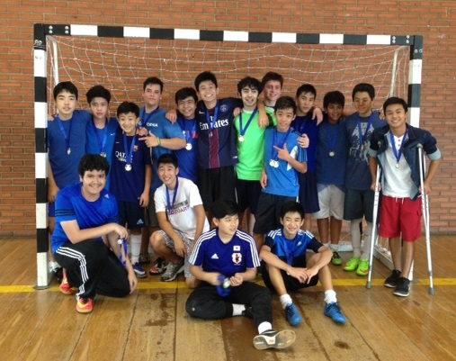

Feito pelos alunos, feito para você!
Clima de amizade marca o Torneio Interclasses
segunda-feira, 31 de outubro de 2016; por Admin
Foto retirada do site pioneiro.com.br
“Aconteceu!”, “Muito bom!”, “Valeu, mesmo nosso time perdendo!”. Essas foram frases de muitos alunos durante as partidas do 1° Torneio Interclasses do Pioneiro.
Esse campeonato de futsal masculino aconteceu no dia 14 de outubro e teve como objetivos estimular o protagonismo do estudante na vida escolar de forma a interagir socialmente por meio da prática esportiva e também desenvolver hábitos de vida saudável.
Participaram seis equipes, formadas por alunos do 8° ano do Ensino Fundamental ao 3° ano do Ensino Médio. A final foi disputada pelos times do 8° e do 9° ano, sendo o primeiro o vencedor, pelo placar de 5 a 2.
Foi uma oportunidade para compreender que a prática do esporte não é resumida apenas ao jogo em si: envolve organização, espírito de equipe, cidadania e consciência de si e do outro.
A frase de Ayrton Senna mostra bem a força do coletivo:
“Eu sou parte de uma equipe. Então, quando venço, não sou eu apenas quem vence. De certa forma termino o trabalho de um grupo enorme de pessoas!”
E foi nesse clima de interação e de amizade que o campeonato aconteceu, com as torcidas de cada turma incentivando fora das quatro linhas e motivando as equipes.
Ao término da esperada finalíssima, os campeões e vice receberam suas medalhas das mãos dos alunos e professores.
Foto retirada do site pioneiro.com.br
O fundamental a destacar, no entanto, é que todos venceram. Além do ganhar ou perder, participar é sempre a essência de qualquer competição.
Vale a pena ressaltar que o campeonato foi pensado e organizado também pelos alunos, principalmente os do 1º ano do Ensino Médio. Nosso parabéns a todos!
Renato Luginick - Professor de História.
Foto retirada do site pioneiro.com.br
Mas não é apenas isto. Ocorreu, pois nós, alunos do 1° ano do Ensino Médio, juntamente com os professores Maurício e Renato, fizemos acontecer.
Com o objetivo de unir os alunos e nos divertir, criando o espirito esportivo dentro de cada um que participou desde incrível campeonato, realizamos o primeiro torneio interclasses do colégio. Temos a total certeza de que quem participou saiu satisfeito, feliz e com muito orgulho de ter feito parte disso, afinal, não é todo dia que realizamos um evento tão especial.
O incentivo e a entrega de cada um em quadra deixaram a nós, organizadores de toda essa farra, muito orgulhosos e felizes. Com isso percebemos que valeu muito a pena persistir e lutar para que algo acontecesse.
Foto retirada do site pioneiro.com.br
Gostaríamos de ressaltar a dedicação de cada professor que nos ajudou. Cada um deles abraçou a ideia e não desistiu até ver todos os times em quadra jogando e se divertindo. A entrega foi tanta que, faltando um dia para o início do campeonato, o nosso querido professor Mauricio teve a ideia de darmos uma premiação aos vencedores. Então no próprio dia fomos atrás disso e ao término do campeonato entregamos a medalha de campeão aos vencedores.
Por fim, gostaríamos de parabenizar a equipe vencedora da competição, os meninos do 8° ano, e também os professores Maurício, Renato e o coordenador Álvaro.
Foto retirada do site pioneiro.com.br
Adicione um comentário sobre essa notícia: OBS: Esse sistema de comentários só funcionará, quando o domínio do site for pago!